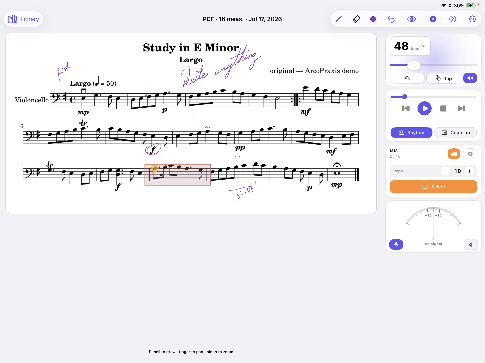
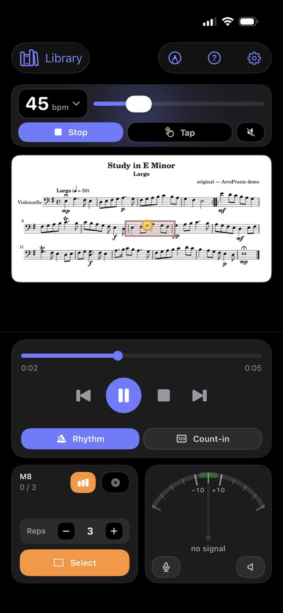
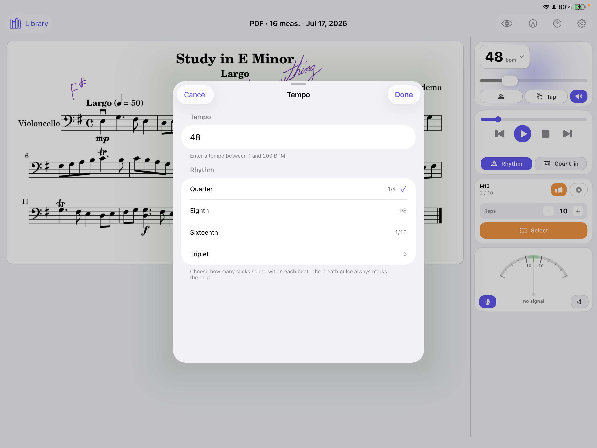
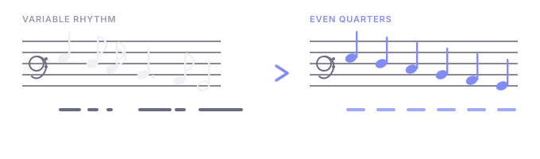
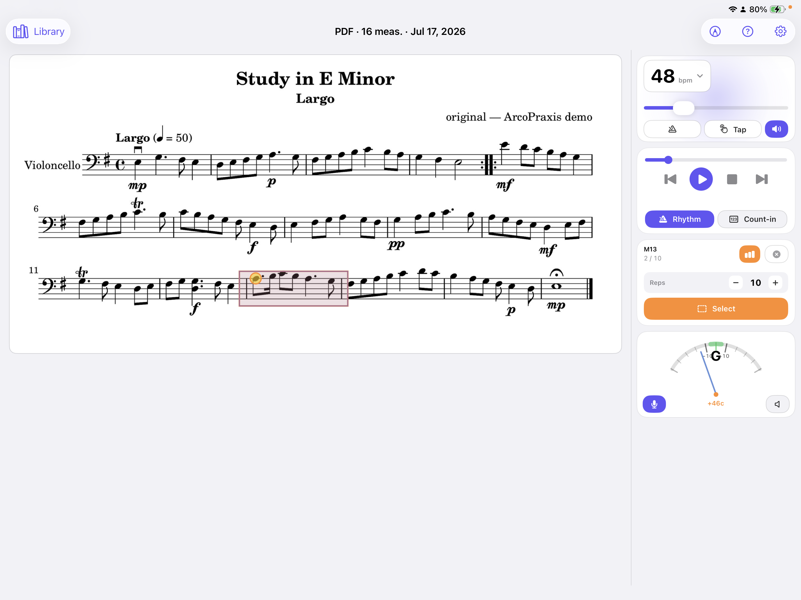
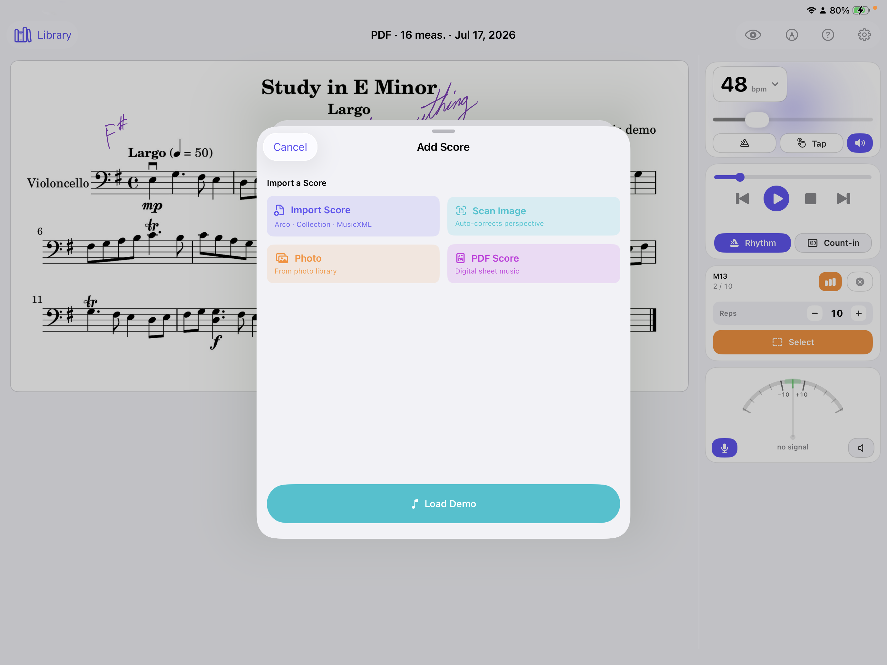
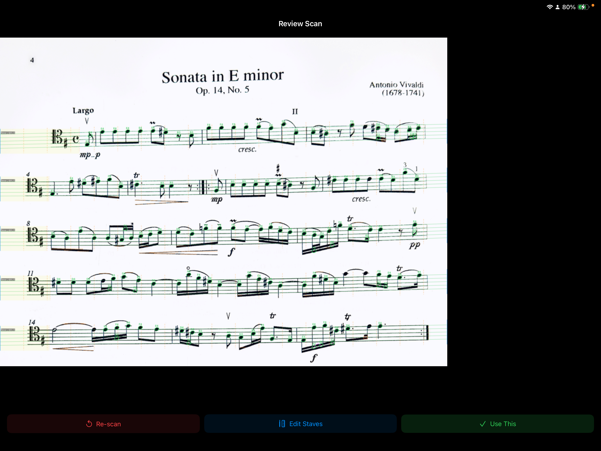
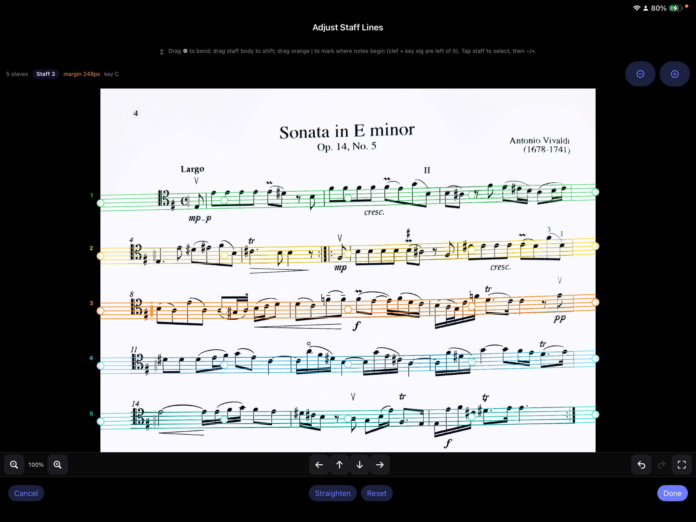

Not this
- A gig app with setlists and stage mode
- A curated library of famous scores
- A social platform for performers
- Endless subscriptions and upsells
Built for cello practice
ArcoPraxis is dedicated to one thing: helping you practice better. Not a gig app. Not a curated score library. Just powerful tools that turn any sheet music into a personal coach.


What ArcoPraxis is — and isn't
Popular apps are built for gigs, libraries, and browsing thousands of scores. ArcoPraxis is built for you — sitting in the practice room, working on the passage that keeps beating you.
Practice tools
Slow YouTube and the audio turns to mush. ArcoPraxis uses a real cello synthesizer, so you can drop to any tempo and still hear clean, musical pitch. Practice at your speed, not the virtuoso's.

Strip away timing to focus purely on intonation. Hit every note in tune before you worry about the beat. Add rhythm back when you're ready to work on shifts and phrasing.

Select the measures that haunt you and loop them — over and over and over — until you've mastered them. The practice room's best friend. Works the same on iPhone and iPad.
No app-switching mid-practice. Tune up, set your tempo, and stay in the flow — everything lives in one place.

Photos, scanned documents, PDFs, MusicXML, and native .arco files — the best format for practice. Your teacher can send you assignments directly in Arco format, ready to load and play.

Under the hood
No machine learning. No training data. No cloud API waiting on a server halfway around the world. Just clever geometry that finds noteheads the way a human eye does — by asking the right questions in two dimensions.
Like finding raisins in a slice of bread — scan horizontally, scan vertically, and only the objects that pass both tests at the same spot are noteheads. Stems, beams, staff lines, and text fail one test or the other. Noteheads pass both.


Your practice, your way
Remove rhythm. Hear each pitch clearly. Fix the notes that slip sharp or flat.
Add rhythm back. Now the timing matters — nail the shifts and string crossings.
Speed it up. Loop it. Push the tempo until the passage feels effortless.
See it in action
A walkthrough of importing a score, slowing it down, looping hard measures, and practicing with the tools built into ArcoPraxis.
Why I built it
I built ArcoPraxis because I was frustrated with YouTube. The cellists on there are incredible — but they play too fast for a beginner. Even when they play slow, it's still too fast.
Slow down YouTube itself and the sound gets super distorted — awful to practice with. And the ads. Holy moly, the ads.
ArcoPraxis lets you slow music playback to any speed with zero distortion. Remove the rhythm to focus on intonation. Add it back to focus on shifts. Speed it up and be a cello hero. It's your call.
And the ads? None. Pay once, play forever. Free updates.
"Even when they play slow, it's still too fast."
This is just the beginning
ArcoPraxis is actively evolving — new practice modes, smarter editing tools, and deeper intonation feedback are all on the way. Buy once and every update is yours, free.
Simple pricing
No subscriptions. No ads interrupting your practice. No "premium tier" holding features hostage. One purchase, lifetime access, free updates.
Available on iPhone & iPad · iOS 17+
Download on the App StoreGet in touch
Questions about practice tools, privacy, or anything else? Send a note — we’ll get back to you. Read the full privacy statement anytime.